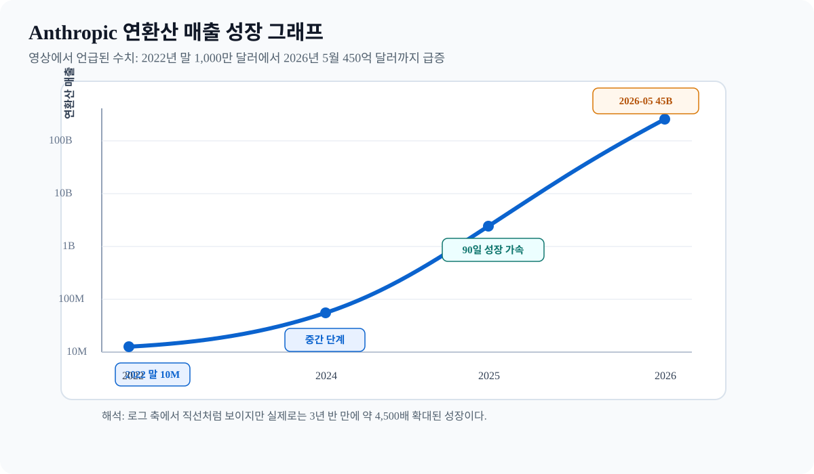

AI Semiconductor Report · 2026-05-31
AI 반도체 밸류체인 총정리 리포트
AI 수요가 왜 계속 커지는지, 그 수요가 CPU·메모리·패키징·전력·인터커넥트로 어떻게 번지는지를 정리한다.

그림: 영상에서 언급된 연환산 매출 수치를 바탕으로 자체 작성.
핵심 결론
AI 반도체를 GPU와 HBM만으로 보면 안 된다. AI 수요가 계속 커지면서 병목은 연산, 메모리, 패키징, 파운드리, 전력, 인터커넥트, CPU, 아날로그, RF, 특수 공정으로 동시에 번지고 있다.
핵심 인사이트: AI 반도체 투자는 "GPU 하나를 사는 문제"가 아니라, AI 워크로드가 어디에서 막히는지에 따라 밸류체인이 순차적으로 확장되는 구조를 보는 일이다.
왜 AI 수요가 계속 커지나
AI가 한 번 답을 내는 도구에서, 계속 일을 시키는 시스템으로 바뀌고 있기 때문이다. 에이전트화, 도구 호출 증가, 지속 실행, 기업 내 확산, 모델 고도화, 그리고 사용량 증가가 다시 데이터와 학습 수요를 키우는 환류 효과가 함께 작동한다.
| 구분 | 수요가 커지는 이유 |
|---|---|
| 에이전트화 | 질문 한 번이 아니라 여러 단계 작업을 맡긴다 |
| 도구 호출 | 검색, DB 조회, 코드 실행, 문서 처리가 붙는다 |
| 지속 실행 | 24시간 워크플로가 늘어나 추론 빈도가 커진다 |
| 기업 내 확산 | 개인 챗봇이 아니라 업무 시스템 안으로 들어간다 |
| 모델 고도화 | 더 큰 모델과 긴 컨텍스트가 더 많은 연산과 메모리를 요구한다 |
영상은 Anthropic의 연환산 매출 급증을 이런 수요 폭증의 예시로 든다. 2022년 말 약 1,000만 달러에서 2026년 5월 약 450억 달러로 커졌다는 설명은, AI 사용량이 얼마나 빠르게 늘고 있는지를 보여주는 신호로 읽을 수 있다.
CPU가 다시 중요해진 이유
생성형 AI 초기에는 GPU가 중심이었지만, 에이전틱 AI로 넘어오면 외부 도구 호출, 데이터베이스 검색, 작업 순서 제어, 메모리 관리가 늘어나면서 CPU 부담이 커진다. 영상은 서버 구성에서 GPU 4~8개당 CPU 1개였던 구조가 더 촘촘해질 수 있고, 극단적으로는 GPU:CPU가 1:1에 가까워질 수 있다고 설명한다.
세부 밸류체인
| 분야 | 의미 | 대표 예시 |
|---|---|---|
| CPU | 에이전트 AI 확산으로 수요 재상승 | Intel, AMD, Arm, Qualcomm |
| 메모리 | HBM, SSD, DRAM이 동시 수혜 | SK hynix, Samsung Electronics, Micron |
| 파운드리 | 선단 공정과 국내 생산 중요성 확대 | TSMC, Intel Foundry, Samsung Foundry |
| 장비 | 공급 부족과 증설 사이클의 직접 수혜 | ASML, Applied Materials, Lam Research, KLA |
| 패키징 | GPU-HBM 결합의 핵심 병목 | CoWoS, EMIB |
최종 판단
최종 관점: AI 반도체는 GPU 한 줄로 끝나지 않는다. GPU가 먼저 달리고, HBM과 패키징이 따라붙고, CPU와 전력 반도체, 인터커넥트, RF, 특수 공정이 뒤를 받친다.
출처
- 한경 글로벌마켓, 「다 같은 반도체가 아니다, 인텔 퀄컴 폭등했던 이유 | AI 반도체 밸류체인 총정리」, 2026-05-12.
- 공개 한국어 자동 자막 기반 요약.